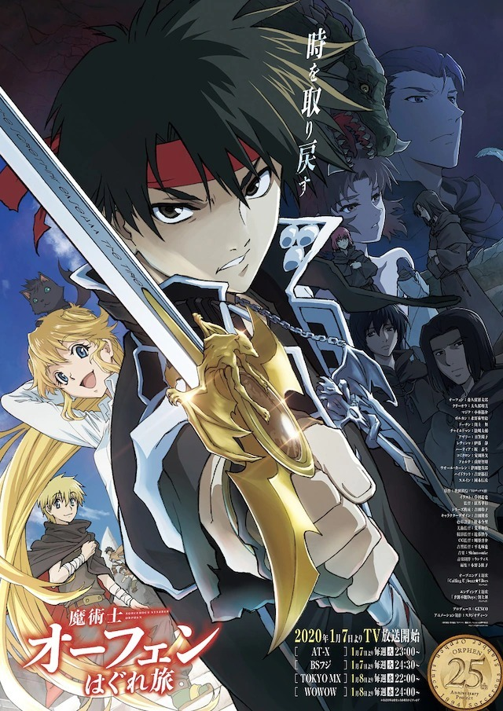

AnimeInterester
魔術士歐菲流浪之旅

故事簡介
與如同姐姐般敬仰的《天魔之魔女》阿莎莉以及其他夥伴，一同來到魔術士培養機關《牙之塔》進行修行的奇利男謝洛——。在那天，他看見了阿莎莉化身為龍形怪物。於是，為了拯救能改變命運之劍並尋找失蹤的她，奇利男謝洛改名為歐菲，走出《牙之塔》並開始了冒險旅程。自那之後過了五年…，歐菲終於與阿莎莉再會——。 另一方面，曾是他師父的大陸最強黑魔術士查爾德曼以及曾經的夥伴，哈帝亞和科米庫隆等人，開始出征討伐變為魔獸的阿莎莉——。各種各樣的思緒交錯之中，與突然加入的大小姐克麗奧、徒弟馬吉克踏上旅途的歐菲，究竟作何想法。
製作人員
原作：秋田禎信
原作插畫：草河遊也
導演：浜名孝行
劇本統籌：吉田玲子
角色設計：吉田隆彦
色彩設計：桂木今里
美術監督：荒井和浩
攝影監督：近藤慎与
CG監督：川谷啓介
音響監督：平光琢也
剪輯：小野寺桂子
監製：GENCO
聲優名單
歐菲：森久保祥太郎
克麗奧：大久保瑠美
馬吉克：小林裕介
博魯坎：水野麻里繪
多進：淵上舞
查爾德曼：浪川大輔
阿莎莉：日笠陽子
蕾蒂莎．馬格雷迪：伊藤静
哈帝亞：坂泰斗
科米庫隆：安田陸矢
伏爾特．帕金加姆：前野智昭
沃爾．卡連：津田健次郎
消防栓：吉野裕行
塞因：岡本信彦
各集標題
| 話數 | 標題 |
|---|---|
| 1 | 追憶的呼喊聲 |
| 2 | 牙之塔 |
| 3 | 野獸啊 回應吾之呼喚 |
| 4 | 天魔之魔女與鋼之繼承者 |
| 5 | 深淵龍族 |
| 6 | 森林巫女 |
| 7 | 野狼啊 聚集于吾之林 |
| 8 | 唐突的暗殺者 |
| 9 | 過去的亡靈 |
| 10 | 暗殺者啊 消除吾之過去 |
| 11 | 沃爾的教室 |
| 12 | 死亡尖叫 |
| 13 | 繼承者啊 來到吾之高塔 |